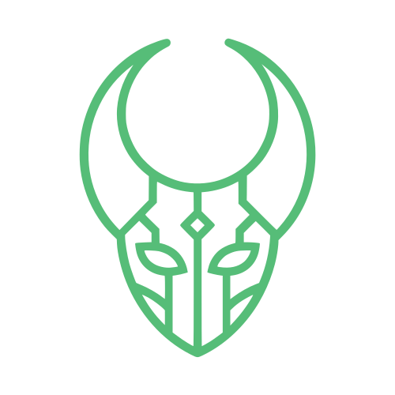

GALNYXCuatro familias, cuatro trabajos distintos. No es una tipografía "bonita" puesta en toda la web — es una jerarquía real: cada familia entra solo donde su carácter suma, y sale de todo lo demás.
Condensada y geométrica — la variante ancha (wdth) alta la vuelve un logotipo de una sola pieza; angosta y en mayúsculas, es la voz de "alerta" de la marca en etiquetas y categorías.
Máscaras hiperrealistas y trajes de terror, seleccionados uno por uno. Sin stock fantasma: lo que ves disponible, se despacha.
Se queda neutra a propósito — es la misma familia que dibujó Instrument Serif, así que nunca choca con el titular, solo lo sostiene.
Ninguna tienda de disfraces en Perú combina cuatro registros con roles fijos — casi todas usan una sola sans genérica para absolutamente todo, o una fuente "de terror" barata, y ambas leen como puesto de mercado. Aquí cada familia entra a resolver un problema distinto: Instrument Serif (dibujada por Rodrigo Fuenzalida) es la voz editorial — trazos con contraste sutil que dan el mismo peso "de revista de lujo" que Bodoni, pero con calidez y menos formalidad de moda europea, más cercana al terror elegante que queremos. La itálica no es decoración: marca el giro emocional exacto de la frase ("quien eras.").
Big Shoulders es una familia condensada de Google Fonts Type Team pensada para carteles y titulares urbanos angostos — la usamos angosta y en mayúsculas para el wordmark GALNYX (se vuelve un bloque sólido, casi un isotipo tipográfico) y para toda etiqueta de estado: categorías, badges de stock, kickers. Es la voz "técnica/alarma" que responde al ícono gótico-tecnológico del logo.
Instrument Sans es el compañero oficial de Instrument Serif — misma casa tipográfica, proporciones calculadas para convivir en la misma página sin competir — así que el cuerpo de texto nunca se siente "pegado" al titular. Y JetBrains Mono aporta el último registro: todo lo que es un dato real (SKU, stock, descuento, rating) se lee como un dato, con el mismo tono "sistema" de una terminal, reforzando la promesa de "stock real, no fantasma" con la tipografía misma, no solo con el copy.